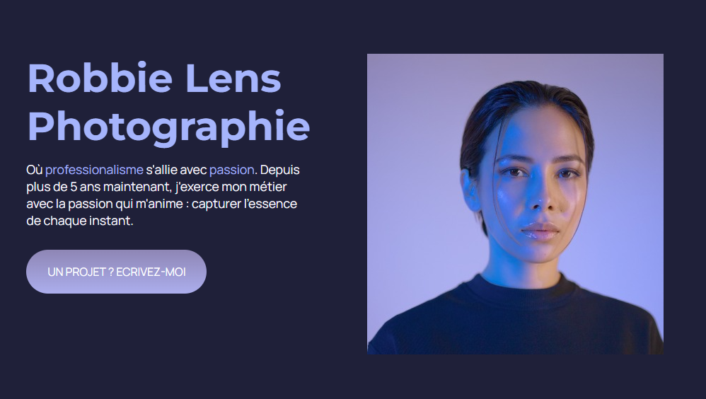
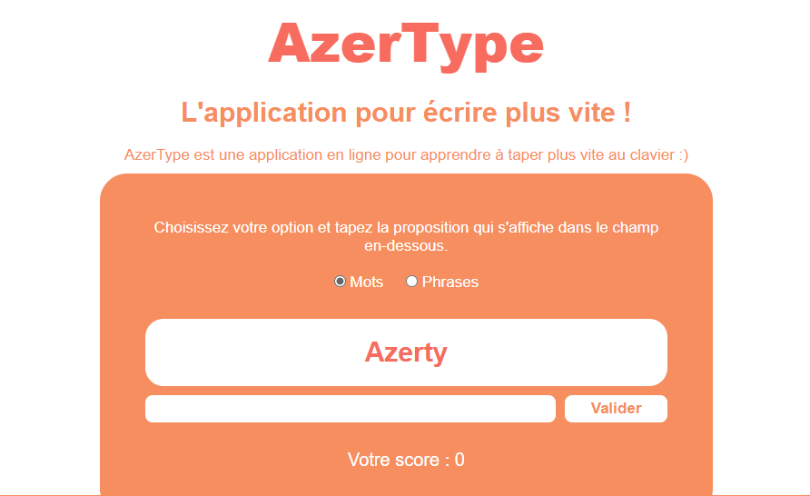
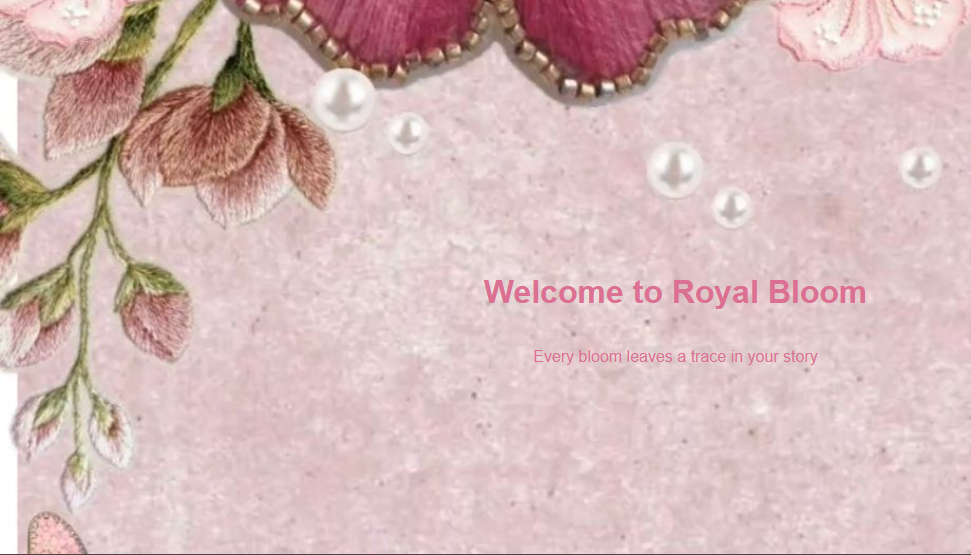

~ MES REALISATIONS ~

🚺 Projet Portfolio — Robin Lens
J’ai réalisé le site web d’une photographe nommée Robin Lens 📸.
Le site contient son portfolio, une présentation à propos d’elle, ses tarifs ainsi que ses contacts.
Ce projet a été développé uniquement avec HTML et CSS

✨ Projet Application — Azertype
J’ai réalisé une application en ligne appelée Azertype ⌨️.
Cette application permet aux utilisateurs d’améliorer leur vitesse de frappe et d’écrire plus rapidement grâce à des exercices de saisie interactifs.
Le projet a été développé avec JavaScript.

🌸 Projet Entreprise — Royal Bloom
J’ai créé le site web de mon entreprise appelée Royal Bloom 💐.
Le site présente la vente de fleurs ainsi que des services de décoration florale pour des événements spéciaux.
Les visiteurs peuvent découvrir les produits, les services proposés et les contacts de l’entreprise.
Ce projet a été réalisé avec HTML/CSS et JavaScript.